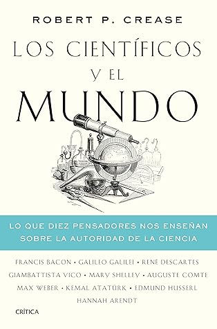

Los científicos y el mundo: Lo que diez pensadores nos enseñan sobre la autoridad de la ciencia (Drakontos) (Spanish Edition)
Reseña por Jorge I. Zuluaga

Ver reseña en GoodReads (necesita cuenta)
El libro captura la atención desde el principio.
Yo no pude soltarlo hasta que lo terminé.
No puedo negar tampoco que como científico tengo además un interés particular por las historias y los temas tratados en el libro.
Aún así les aseguro que cualquiera que disfrute de la buena literatura de divulgación (de la historia, la ciencia y de la filosofía, como es el caso de "Los científicos y el mundo") encontrará esto texto entretenido, apasionante (en mucho apartes) y definitivamente muy informativo.
Como sabrán los pocos lectores reincidentes de mis reseñas (que en realidad están dirigidas a mí yo futuro) no me gusta repetir lo que ya esta en la descripción del libro (¡lean la siempre!), de modo que me limitaré a describir el texto como una colección de 9 biografías de personajes claves en la historia de la ciencia y de su relación con otras disciplinas y con la sociedad.
El libro trae además, como "ñapa", una interesantísima historia de la relación que una sociedad islámica altamente conservadora (el imperio Turco-Otomano de finales de los 1800) tuvo con la ciencia como instrumento de progreso social. En esta historia, el autor resalta a Kemal Atatürk, el que es posiblemente el único dirigente laico y progresista que han tenido los países islámicos en la historia reciente. Solo por este increíble y relativamente desconocido episodio de la historia ¡vale la pena leer el libro!.
De estas biografías, y como tema transversal, Robert Crease, el filósofo autor de este libro, extrae enseñanzas útiles sobre como la ciencia surgió y también como, entre otras cosas por su influencia, algunas sociedades, como decía Max Weber, otro de los personajes reseñados en el libro, degeneraron en sistemas de "especialistas sin espíritu y hedonistas sin corazón".
Lo primero que me llamo la atención del libro fue la originalidad en el tratamiento de las biografías.
Este juicio lo hago sobre lo que he leído acerca de Galileo Galilei y cuya biografía creo conocer bien. La sucinta narración que ofrece Robert Crease de la vida del matemático florentino resalta detalles bastante originales que no había visto en ninguna parte. A juzgar por este caso creo que hace lo mismo con la vida de los demás personajes en el libro (Francis Bacon, René Descartes, Hannah Arendt, Auguste Comte, etc.)
La segunda cosa que me sorprendió fue descubrir una dura crítica a la ciencia, planteada desde el conocimiento amplio de su historia y de la obra de filósofos y científicos que identificaron sus problemas desde el principio.
Una crítica a su búsqueda de verdades "objetivas" sobre el mundo (si tal cosa existe) y, como lo soñó Francis Bacon (el personaje con el que abre el libro) del poder que está forma de conocimiento otorga a los humanos para manipular ese mismo mundo, originalmente, con el propósito de favorecer sus propios intereses.
Como científico y ciudadano de un mundo en crisis, cada vez estoy más convencido de la necesidad de esta autocrítica. Lo estoy más aún después de leer el novedoso texto de Crease.
El texto está lleno de excelente citas y combina un lenguaje erudito y didáctico, con algunas referencias humorísticas, e incluso, ácidas invectivas, en las que no se disimula una rabia visceral, contra los políticos que niegan la evidencia científica, desconociendo los daños que pueden producir a los ciudadanos que dicen representar.
Me encanto al fin entender (o creer que entendía) las ideas de filósofos que creía conocer, pero que siempre habían sido relativamente confusas, imprecisas u oscuras para mí.
Desde Rene Descartes, cuyas contribuciones a la filosofía se mencionan nominalmente en la eduación (incluyendo su críptica y mal entendida frase de "pienso, luego existo"). El profesor Crease logra aclarar mejor algunas claves de la filosofía cartesiana y también criticarlas a la luz del proyecto del libro. Pasa lo mismo con las ideas del gran Giambattista Vico, prácticamente el padre de las ciencias humanas, cuyas ideas personalmente no conocía (¡gran error!). Ahora me causa mucha curiosidad conocer mejor su obra ¡un punto para el autor!.
Un amigo me había regalado hace algunos años uno de los textos de Edmund Husserl, otro de los personajes del libro, que intente leer sin mucho éxito. Al leer "Los científicos y el mundo" al fin pude entender, o tener la ilusión que comprendía, la filosofía de este maestro de maestros.
Igualmente logre capturar algunas ideas de su discípulo Martin Heidegger, al que no le dedica un apartado completo, pero cuya filosofía menciona en la historia de Hanna Arendt.
La historia de Hanna Arendt, a la que conocía solo por referencias indirectas, discípula de Heidegger, y de su concepción de la libertad y la sociedad, me impacto muy positivamente y ahora me siento impelido a buscar sus obras. El símil que hace Crease de las conclusiones a las que llega Arendt sobre el origen del absolutismo en el siglo XX, con la emergencia del poder de la ciencia y de la inevitable crisis del negacionismo científico que estamos presenciando, es brillante y solo por ella vale la pena la lectura de todo el libro.
Para mi las conclusiones del libro no pueden ser más claras:
1) Necesitamos redefinir la manera en la que la ciencia interactúa con la sociedad. Hacer de la ciencia una actividad más a la Vico (que incluya emociones, cuentos, historia) y menos a la Galileo (una actividad exclusiva para "iluminados" que saben leer el lenguaje matemático del Universo).
2) Las mismas cosas que hacen a la ciencia poderosa (el hecho que sea un producto cultural, su lenguaje especializado y su dependencia de los datos y la incertidumbre o el hecho que este siempre en proceso de construcción), la hacen susceptibles al negacionismo.
3) El negacionismo no se combate (solamente) con denuncias, describiendo los éxitos obvios de la ciencia o su superioridad frente a otras culturas. El negacionismo se combate poniendo en evidencia las contradicciones en los valores de los que la sostienen (dicen defender a los ciudadanos, pero al negar la ciencia los están condenando); se combate con el lenguaje comprensible del humor y el sarcasmo; se combate mejorando el mismo quehacer científico y la manera como se comunica.
4) Un mundo dominado por la ciencia y la razón no es un mundo necesariamente mejor (es duro decirlo pero más duro entenderlo y lo digo por experiencia propia). Como lo muestran las evidencias históricas enumeradas en el libro, las sociedades humanas son mucho más complejas y desconocerlo en aras de una supuesta verdad objetiva, no hace sino agravar los problemas sociales.
Citando a Hanna Arendt que decía que "la verdad y la política no se la llevan demasiado bien" podríamos también decir que la ciencia y la verdad se la llevan demasiado bien, pero al hacerlo la ciencia olvida su origen y deudas culturales y humanas; al hacerlo puede crear sociedades condenadas al fracaso y es presa del negacionismo.
Una lectura obligada para científicos.